Two networks in cascade that take a 768 × 768 satellite tile and return the mask of every hull, pixel by pixel. Airbus Ship Detection Challenge, built in PyTorch.
Global maritime traffic keeps growing, and with it illegal fishing, undeclared transport, spills and accidents on the open sea. Satellites already photograph the entire ocean every day: 361 million km² of it. The bottleneck was never taking the picture; it is that somebody has to look at it. That is the gap Airbus opened to the public with a dataset of 192,556 satellite tiles.
The task is deliberately harder than detection. It is not enough to answer “there is a ship here”: the deliverable is the mask of the hull, pixel by pixel, encoded in the exact format the competition scores. This case study walks through how the problem was framed, why a single network cannot solve it, and how the final cascade performs on tiles it never saw during training.
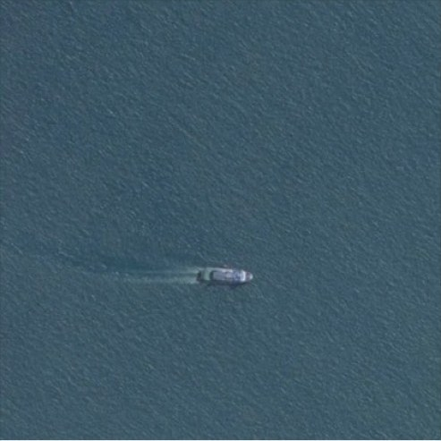
The competition does not score accuracy. It scores F2, which weights recall four times more heavily than precision:
The asymmetry encodes the real cost structure of maritime surveillance: a false positive costs a human review, a false negative costs the vessel. Every design decision downstream (the loss function, the decision threshold, even how the metrics are aggregated) follows from that single choice.
The prompt hides two tasks whose granularity is incompatible. They need different resolutions, different losses and different training regimes, so they were solved separately:
One answer per tile. Binary classification over the whole frame. 77.9% of the dataset is empty ocean, so this branch decides whether the expensive machinery runs at all. Solved with a fine-tuned ResNet-50.
65,536 answers per tile. Semantic segmentation, one decision per pixel. Needs an architecture that preserves spatial detail instead of collapsing it into a label. Solved with a U-Net trained from scratch.
The dataset does not ship image/mask pairs. It ships a CSV with two columns, ImageId and EncodedPixels, where the second is plain text: the mask compressed as Run-Length Encoding, a list of (start, length) pairs over the flattened image. An empty cell means no ship. Nothing can backpropagate through that, so the first component built was the decoder.
Three details decide whether the reconstruction is correct, and the third is the interesting one. The pairs index a flat vector, not a row-indexed matrix. The indices are 1-based. And the flattening is in Fortran order, column by column: the convention of MATLAB and much of the geospatial software world, not the row-by-row order NumPy uses by default.
"4 3", read under both flattening conventions.This is the detail worth dwelling on. Read in row-major order the mask comes out transposed, and the number of lit pixels is identical in both readings, so no shape assertion, no pixel count, no sanity check on the tensor will ever catch it. The only way to see the error is to look at the mask on top of its image. One argument fixes it:
A second consequence falls out of the same format. A tile containing three ships occupies three rows of the CSV, one per instance, so the rows are grouped by ImageId and every run is accumulated onto the same flat vector. The resulting mask is therefore semantic, not instance-level: two adjacent hulls merge into one region. That matches the objective (hull versus water), but it means the system delimits ships rather than counting them.
The hardest property of this dataset is not the resolution or the volume. It is that the object of interest is rare, and it is rare twice over: once across tiles, once inside them.
The two scales cannot be fixed the same way, because at pixel level there is nothing to throw away:
Undersample the majority class so the classifier sees as much empty ocean as it does ships. The trivial baseline drops from 77.9% to 50% and accuracy becomes an interpretable signal again. Cost: 107,444 discarded tiles.
Change the loss instead of the data. Dice measures overlap, and the background enters neither its numerator nor its denominator, so predicting all zeros yields intersection 0, Dice 0 and loss 1: the maximum penalty.
Both halves earn their place. Cross-entropy provides a stable gradient early on, when predictions are essentially random and the Dice term is noisy; Dice then drives the shape of the hull once there is something to overlap with.
The final system is a gate followed by a segmenter. A ResNet-50 fine-tuned from ImageNet decides whether the tile contains anything at all; only tiles that pass reach the U-Net.
The gate is mandatory, not a speed trick. The two networks were trained on different populations: the classifier saw a balanced mix of empty ocean and ships, but the U-Net was trained exclusively on the 42,556 tiles that contain a ship. It has never once been asked to return an empty mask. Put it in front of open water on its own and it hallucinates hulls. The classifier is what makes its narrow training set safe.
The efficiency is a side effect: roughly 78% of tiles leave through the cheap branch without ever touching the segmenter's 31 million parameters. One further detail matters for scoring: the U-Net works at 256 × 256 but the official metric is evaluated at full resolution, so the logits are upscaled to 768 × 768 and thresholded afterwards. Interpolating an already-binarised mask would leave stair-stepping along the hull contour.
Segmentation has to answer where, and that is precisely the information an encoder destroys: every max-pool throws away three pixels in four. The U-Net resolves the contradiction with two symmetric branches and, above all, with skip connections: before each reduction the activation map is saved and reinjected into the upward branch at matching resolution.
The decoder therefore receives both halves of the answer: the what from the bottleneck and the where from the encoder's fine edges. The final layer is deliberately a bare 1 × 1 convolution (no batch norm, no activation) so that the output is a raw logit free to run across the whole real line. An activation there would clamp negative values to zero and, since sigmoid(0) = 0.5, no pixel could ever fall below 50% probability.
Each network was trained under the regime its own task demands: different resolutions, different losses, different initialisations:
| ResNet-50 · gate | U-Net · segmenter | |
|---|---|---|
| Training data | 68,090 tiles (balanced 50/50) | 34,044 tiles (ships only) |
| Held-out set | 17,022 tiles | 8,512 tiles |
| Resolution | 224 × 224 | 256 × 256 |
| Batch size | 32 | 16 |
| Initial weights | ImageNet · full fine-tuning | random · from scratch |
| Loss | BCEWithLogitsLoss | 0.5·BCE + 0.5·(1 − Dice) |
| Optimiser | Adam · lr 1e-3 | Adam · lr 1e-4 |
| Epochs | 2 | 3 |
| Result | training accuracy 0.9188 → 0.9429 | loss 0.4176 → 0.1530 → 0.1279 |
The backbone was not frozen. The usual transfer-learning shortcut is to keep ImageNet as a fixed feature extractor, but ImageNet teaches textures of ground-level terrestrial photography; here the imagery is nadir, nearly monochrome, and the object covers half a percent of the frame. The pretrained weights are worth keeping as an initialisation, not as a frozen encoder.
Metrics are accumulated pixel by pixel across the whole held-out set and the ratios computed at the end, rather than averaging per-image scores. Averaging would give a 600-pixel cargo ship the same weight as a 20-pixel launch, and a single hard tile would sink the mean. All figures below are measured on the 8,512 validation tiles the U-Net never saw.
Recall weighted four times more than precision, exactly as the competition scores it.
Overlap between predicted and true masks, with the background excluded from the ratio.
| Metric | Value | Reading |
|---|---|---|
| F2 (official) | 0.7726 | recall-weighted score |
| Dice (F1) | 0.7912 | mask overlap |
| IoU (Jaccard) | 0.6545 | intersection over union |
| Precision | 0.8243 | of 100 pixels called ship, 82 are |
| Recall | 0.7607 | of 100 real ship pixels, 76 are found |
With precision (0.8243) above recall (0.7607) the network is conservative: it would rather leave a pixel unmarked than risk marking it wrongly. Since F2 rewards recall four times over, that gap is a known lever: lowering the decision threshold below 0.5 trades precision for recall in the direction the metric prefers, without retraining anything.
A representative validation tile, from raw input through to a pixel-level error map:
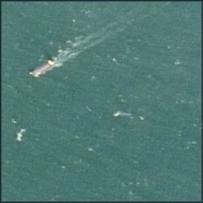
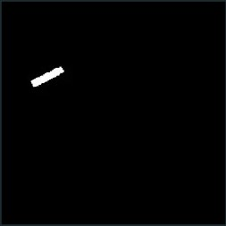
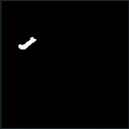
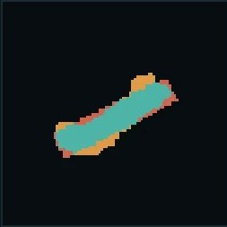
The errors are not random, and that is the most useful thing the evaluation reveals. They concentrate on the contour of the hull and on the wake, never on distant background. Three validation tiles that stress the model in different ways:
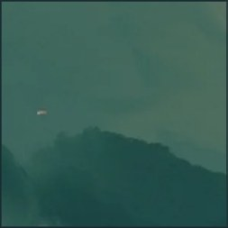
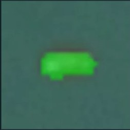
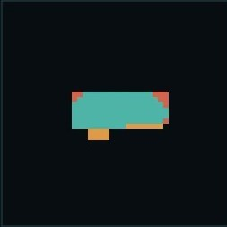
Hard edges from terrain are the obvious distractor, and the network produces no false positives there. It learned “ship”, not “thing that contrasts with water”.
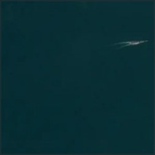
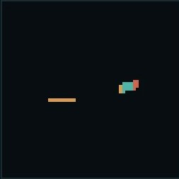
The characteristic failure mode. It still finds the vessel, but fragments the mask and flags part of the wake as hull: bright, elongated and directly attached to the ship.
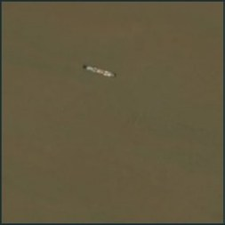
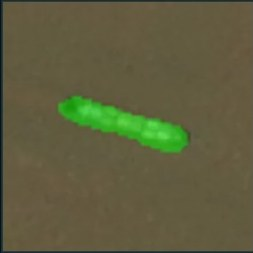
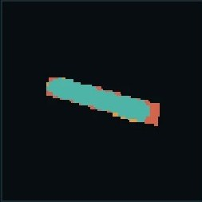
A background nothing like the open blue of the other tiles, and performance holds. The colour of the water was not memorised; the error is mild contour erosion at bow and stern.
The work was developed in a Kaggle notebook and then restructured into an installable Python package, so that the result is something that can be re-run rather than re-read:
Every hyperparameter lives in a typed YAML schema. Launching a variant means copying a file and passing --config; a misspelled key raises immediately with the list of valid ones instead of being silently ignored.
The validation set is rebuilt, not stored: a fixed seed through the split function returns exactly the same 8,512 tiles, so metrics computed months apart remain comparable.
Weights and checkpoints are separate artefacts. The checkpoint carries the Adam moments as well, since restarting the optimiser with already-trained weights can destabilise what was learned.
67 integration and validation tests over the decoding, the datasets, the network shapes, the loss and the end-to-end cascade, including the silent failures that run without raising and simply return the wrong answer.
The repository ships the package, the CLI entry points for training, evaluation and inference, and a results notebook that loads the saved weights and reproduces every number on this page.